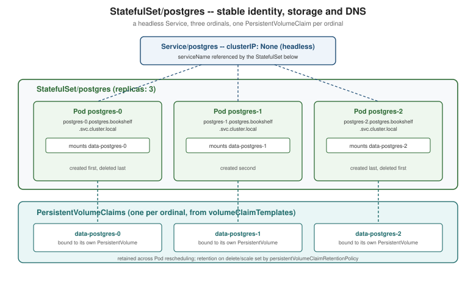

StatefulSets
|
This content was generated with the assistance of AI and should be verified against the official documentation before being relied on in production. |
ReplicaSets and Deployments and
Deployment Strategies both rely on Pods being interchangeable:
any replica can be deleted and replaced by an identical one, under an autogenerated name, with no client anywhere
depending on which replica it talks to. A database is the opposite kind of workload — a primary and its replicas
are not interchangeable, each one owns its own data on disk, and a client (or the database’s own replication
protocol) often needs to reach one specific member by a stable name. StatefulSets (apps/v1) are the controller
that gives a set of Pods exactly that: a stable identity, stable network name and stable storage that all survive a
Pod being rescheduled, at the cost of losing the loose, anonymous coupling a ReplicaSet gives up nothing for. This
page describes StatefulSets as they stand in Kubernetes 1.37; the Bookshelf PostgreSQL StatefulSet below is the
worked example, and every live manifest targets apps/v1.
Stateful vs stateless, and data gravity
A stateless Pod (any Bookshelf Deployment) holds no data a client cares about surviving a restart — delete it, and an identical replacement picks up exactly where the last one left off, because there was nothing "in" it to lose. A stateful Pod holds data that took real work to produce (rows in a database, an index, replicated log positions), and that data has gravity: it is far cheaper to move the compute to where the data already sits than to move the data itself every time a Pod is rescheduled. That is the property a bare Deployment cannot express at all — its Pods are fungible, and a fresh Deployment-managed Pod for a database has no way to reattach to the disk its predecessor was writing to, or to be found by the same name a replication protocol was told to dial. StatefulSets exist to make three specific things stable across rescheduling: identity (name and network address), storage (which disk a given identity always gets back), and order (which Pod comes up, or goes down, first).
Stable identity: ordinals, a headless Service and per-pod DNS
A StatefulSet names its Pods <statefulset-name>-<ordinal>, counting up from 0 (or from spec.ordinals.start,
below) — postgres-0, postgres-1, postgres-2, never a random suffix. The ordinal is reused: deleting
postgres-1 and letting the controller recreate it produces another Pod still named postgres-1, with the same
identity a client or a replication protocol was told about. That name only becomes reachable by other Pods,
however, once it is paired with a headless Service — an ordinary Service with clusterIP: None — set as the
StatefulSet’s spec.serviceName. A normal Service’s DNS name resolves to one virtual IP that load-balances across
every matching Pod; a headless Service’s DNS name resolves to the individual Pod IPs directly, and, because it is
named in serviceName, the StatefulSet controller also registers one DNS record per Pod, following the pattern
<pod-name>.<service-name>.<namespace>.svc.cluster.local. For the Bookshelf PostgreSQL StatefulSet below, that is
postgres-0.postgres.bookshelf.svc.cluster.local, postgres-1.postgres.bookshelf.svc.cluster.local, and so on — addresses stable enough for a replication topology (a primary’s connection string, a replica’s primary_conninfo)
to hard-code, unlike a Deployment Pod’s IP, which changes on every reschedule.
apiVersion: v1
kind: Service
metadata:
name: postgres
namespace: bookshelf
spec:
clusterIP: None # headless: no load-balancing, one DNS record per Pod
selector:
app.kubernetes.io/name: postgres
ports:
- port: 5432Source: Kubernetes Docs — Headless Services.
Stable storage: volumeClaimTemplates and the retention policy
A Pod’s own spec.volumes list is shared by whatever ReplicaSet or StatefulSet manages it — every replica gets an
identical volume. A stateful Pod instead needs one PersistentVolumeClaim per ordinal, each bound to its own
PersistentVolume, so postgres-1 always reattaches to the same disk it wrote to last, never the disk postgres-0
or postgres-2 wrote to. spec.volumeClaimTemplates is what makes that automatic: the controller creates one PVC
per template per ordinal, named <template-name>-<statefulset-name>-<ordinal> (data-postgres-0, data-postgres-1,
…), and mounts it into the matching Pod every time that ordinal is (re)created. See
Persistent Volumes and Storage Classes for
how a StorageClass provisions the PersistentVolume each claim binds to.
By default, deleting the StatefulSet or scaling it down does not delete these PVCs — a deliberate safety choice,
since deleting a StatefulSet is not the same decision as deleting its data. spec.persistentVolumeClaimRetentionPolicy
makes that behaviour explicit and configurable, with two independent policies: whenDeleted (the StatefulSet object
itself is deleted) and whenScaled (the StatefulSet is scaled down, dropping the highest ordinals), each set to
either Retain (the default — PVCs survive) or Delete (PVCs for the removed ordinals are deleted along with
them).
apiVersion: apps/v1
kind: StatefulSet
metadata:
name: postgres
namespace: bookshelf
spec:
serviceName: postgres
replicas: 3
persistentVolumeClaimRetentionPolicy:
whenDeleted: Retain # keep the data if the StatefulSet itself is removed
whenScaled: Delete # drop postgres-2's PVC if replicas goes 3 -> 2
selector:
matchLabels:
app.kubernetes.io/name: postgres
template:
metadata:
labels:
app.kubernetes.io/name: postgres
spec:
containers:
- name: postgres
image: postgres:18
ports:
- containerPort: 5432
env:
- name: POSTGRES_PASSWORD # the image refuses to start without it
valueFrom:
secretKeyRef:
name: postgres-credentials
key: POSTGRES_PASSWORD
volumeMounts:
- name: data
mountPath: /var/lib/postgresql # postgres:18+ keeps PGDATA in /var/lib/postgresql/18/docker
volumeClaimTemplates:
- metadata:
name: data
spec:
accessModes: ["ReadWriteOnce"]
resources:
requests:
storage: 20GiThe postgres-credentials Secret is the one created in
Bookshelf End to End. From postgres:18 onwards the image stores
its data in a version-specific PGDATA (/var/lib/postgresql/18/docker) and refuses to start if a volume is mounted
at the old /var/lib/postgresql/data path, so the claim is mounted one level up.
podManagementPolicy: OrderedReady vs Parallel
By default (OrderedReady) the controller creates, scales and deletes Pods one ordinal at a time, strictly in
order, waiting for each one to become Running and Ready (see
Health Probes and Container Lifecycle) before starting the
next — postgres-0 must be ready before postgres-1 is created, and scaling down removes postgres-2 fully before
touching postgres-1. That ordering matters for a primary/replica topology where a replica’s start-up script dials
the primary by name and expects it already listening. podManagementPolicy: Parallel drops that guarantee entirely:
every ordinal is launched, or terminated, at the same time, with no Pod waiting on another’s readiness. Parallel
suits workloads that coordinate their own membership after the fact (a Cassandra or Elasticsearch-style ring that
gossips to discover peers, rather than depending on postgres-0 existing before postgres-1 starts) and it
noticeably shortens a full scale-out or restart, at the cost of every replica having to tolerate its peers not being
up yet.
Updates: RollingUpdate (partition, maxUnavailable) and OnDelete
spec.updateStrategy controls what happens when spec.template changes, mirroring the Deployment strategies in
ReplicaSets and Deployments but adapted to ordinals instead
of an anonymous ReplicaSet swap.
updateStrategy.type |
Behaviour |
|---|---|
|
Pods are deleted and recreated with the new template one ordinal at a time, in descending order — |
|
The controller changes nothing on its own. Each Pod keeps running its old template until a person (or an external tool) deletes it by hand; only then is it recreated with the new one. This trades automation for full manual control over exactly when, and in what order, each stateful replica is replaced. |
Under RollingUpdate, rollingUpdate.partition (an ordinal number, default 0) restricts the update to Pods whose
ordinal is greater than or equal to it — every Pod below the partition is left on the old template untouched. That
turns a rolling update into a canary for a stateful workload: set partition: 2 on a 3-replica StatefulSet and
only postgres-2 is updated, while postgres-0 and postgres-1 keep serving on the old image until the partition
is lowered (or removed) to let the rest follow. rollingUpdate.maxUnavailable (an integer or percentage, defaulting to
1; behind the MaxUnavailableStatefulSet feature gate, alpha in 1.24-1.34, beta from 1.35 and enabled by default
in 1.37) bounds how many Pods the rolling update is allowed to take down at once when
podManagementPolicy: Parallel is also set — with the default OrderedReady policy it has no visible effect beyond
1, since Pods are already updated strictly one at a time.
kubectl patch statefulset postgres -n bookshelf --type=json \
-p '[{"op":"replace","path":"/spec/updateStrategy/rollingUpdate/partition","value":2}]'
kubectl set image statefulset/postgres postgres=postgres:18.1 -n bookshelf
kubectl rollout status statefulset/postgres -n bookshelf # only postgres-2 is replaced while partition=2ordinals.start
spec.ordinals.start (an integer, default 0) shifts the first ordinal a StatefulSet assigns — replicas: 3 with
ordinals.start: 5 produces postgres-5, postgres-6, postgres-7 instead of postgres-0..2. This is mainly a
migration tool: it lets a new StatefulSet take over a numeric range that does not collide with an existing one
covering the same headless Service and DNS names, so both can briefly coexist (for example while migrating replicas
one at a time onto a new storage class) without one controller’s ordinal 2 fighting another’s ordinal 2 for the
same PVC name and DNS record.
The Bookshelf PostgreSQL StatefulSet
Putting the pieces above together, the Bookshelf PostgreSQL StatefulSet follows the same steps as the official basic StatefulSet tutorial: create the headless Service and the StatefulSet, watch the Pods come up in order, scale it, update it, then delete it.
kubectl apply -f postgres-headless-service.yaml
kubectl apply -f postgres-statefulset.yaml
kubectl get pods -n bookshelf -l app.kubernetes.io/name=postgres -wNAME READY STATUS RESTARTS AGE
postgres-0 1/1 Running 0 38s
postgres-1 1/1 Running 0 21s
postgres-2 1/1 Running 0 9s# per-pod DNS, reachable from any Pod in the cluster
kubectl run -n bookshelf dns-probe --rm -it --image=busybox:1.36 --restart=Never -- \
nslookup postgres-0.postgres.bookshelf.svc.cluster.local
# scale out: postgres-3 is created only after postgres-2 is Ready (OrderedReady)
kubectl scale statefulset postgres -n bookshelf --replicas=4
# update: a new image is rolled out postgres-3 -> postgres-0, one at a time
kubectl set image statefulset/postgres postgres=postgres:18.1 -n bookshelf
kubectl rollout status statefulset/postgres -n bookshelf
# delete: Pods and the StatefulSet are removed, PVCs survive under the default retention policy
kubectl delete statefulset postgres -n bookshelf
kubectl get pvc -n bookshelf -l app.kubernetes.io/name=postgresSource: Kubernetes Docs — StatefulSet Basics and Kubernetes Docs — Running a Replicated Stateful Application.
apps/v1beta1, as history
Hightower, Burns & Beda’s Kubernetes: Up and Running (1st ed., 2017 sampler), ch. 4 (book ch. 13), "Integrating
Storage Solutions and Kubernetes", writes its StatefulSet examples against apps/v1beta1 — StatefulSet was a beta
API at the time (and briefly called PetSet before that, in versions the sampler predates). Its worked example
predates volumeClaimTemplates maturing into the everyday tool it is today: the chapter first builds a manually
replicated MongoDB by hand, using nothing but a headless Service and per-pod DNS to let each replica find its peers,
before introducing the StatefulSet object as the thing that automates exactly that pattern plus per-pod storage.
apps/v1beta1 was removed from the API server in Kubernetes 1.16 along with the other /v1beta1 workload APIs
covered in Objects and the Kubernetes API; every manifest above
targets the current, GA apps/v1 StatefulSet (GA since Kubernetes 1.9). The book’s ch. 5 (book ch. 14) goes on to
build a Redis primary/replica pair with Sentinel as a *two-container StatefulSet sharing a ConfigMap and an
emptyDir volume between containers — a fuller worked example of a multi-container stateful Pod is covered in
Stateful Applications in Practice, reusing
Bookshelf's own Redis deployment rather than repeating it here.
When to use an operator instead
A StatefulSet only automates the generic mechanics above — ordinals, one PVC per ordinal, ordered rollout — it has
no idea that PostgreSQL replicas need a base backup taken before joining, that a failed primary needs a specific
replica promoted and the others repointed at it, or that a minor-version upgrade needs a particular drain sequence.
Scaling PostgreSQL beyond a single, manually wired primary/replica pair, or wanting automatic failover, backups and
point-in-time recovery, is exactly the point where a purpose-built operator (a controller with a
CustomResourceDefinition describing "a PostgreSQL cluster" as one object, covered in
Custom Resources and Operators) earns its added
complexity over a hand-written StatefulSet: it still creates a StatefulSet underneath, but it also encodes the
domain-specific operational runbook — failover, backup scheduling, safe upgrades — that would otherwise be a stack
of bespoke scripts around kubectl patch and kubectl exec.
Stateful Applications in Practice picks this
decision back up with a concrete PostgreSQL operator example.
A per-pod StatefulSet, end to end
